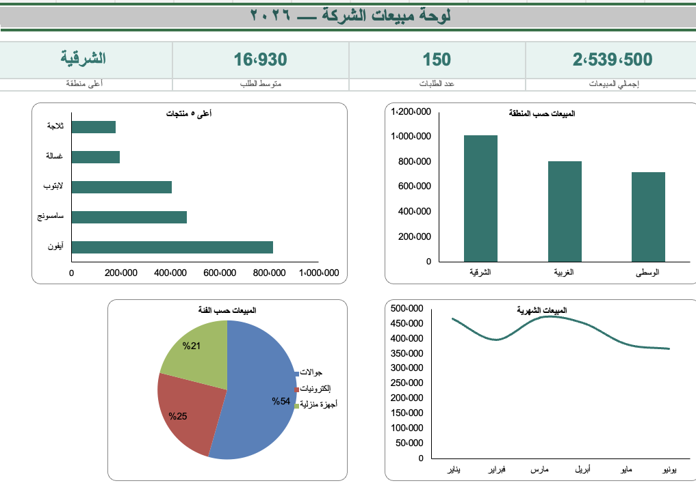

📌 ملاحظة: هذي تكملة الأسبوع الأول — نفترض إنك تعرف الجدول المحوري والمقسّم من قبل. هنا نكبّرها: جدول كبير، تقارير متعددة، ولوحة واحدة تربطها كلها.
👋 قبل ما تبدأ
هذي حقيبة الأسبوع الثاني. الفكرة الكبيرة: عندنا جدول مبيعات كبير (١٥٠ عملية، ٨ أعمدة). راح نبني منه عدة تقارير ذكية — كل تقرير في ورقة (حسب المنطقة، المنتج، البائع، الشهر، الفئة) — ثم نجمعها كلها في لوحة واحدة تفاعلية بمقسّمات تصفّي الكل بضغطة.
نزّل «ملف الشرح» من الأعلى وافتحه، وروح لورقة «المبيعات».
طبّق المحطات بالترتيب على ملف الشرح.
بعدها درّب نفسك على «ملف التمرين» (بيانات جديدة، نفس الخطوات).
تهت؟ افتح «ملف الحل» وقارن.
👀 المطلوب: Excel (ويندوز أو ماك)، ومعرفة بسيطة بالجدول المحوري والمقسّم من الأسبوع الأول.
⬇️ كيف تنزّل ملف التدريب؟
خطوة بخطوة — لا تتجاوزها، هي بدايتك:
فوق هذي الصفحة فيه ثلاثة أزرار. اضغط الزر الأخضر «ملف الشرح» — راح ينزّل ملف Excel على جهازك.
على الكمبيوتر: افتح مجلّد «التنزيلات» (Downloads)، ثم افتح الملف بنقرة مزدوجة (يفتح في Excel).
على الجوال: بعد ما ينزّل، اضغط عليه ← «فتح بـ» ← اختر تطبيق Excel (لو ما هو مثبّت، نزّله مجاناً من المتجر).
داخل الملف، اضغط على ورقة «المبيعات» من الألسنة تحت — هذي بياناتنا اللي راح نشتغل عليها.
👀 المهم: ابدأ دائماً بـ «ملف الشرح» — نطبّق عليه المحطات بالترتيب. «ملف التمرين» تتدرّب عليه بنفسك بعدين، و«ملف الحل» تفتحه فقط لو حبيت تقارن.
⚠️ لو طلب الملف «تمكين التحرير» (Enable Editing) فوق بشريط أصفر — اضغطها عادي، ثم ابدأ.
🎯 ماذا ستبني؟
هذي اللوحة النهائية — أربع بطاقات وأربعة مخططات، ومقسّمات تصفّي كل شيء معاً. ستبنيها قطعة قطعة: تقارير أولاً، ثم توحّدها هنا.

لوحة مبيعات الشركة — وجهتك في نهاية الحقيبة.
١
المرحلة الأولى — تقارير ذكية من جدول كبيرمن جدول واحد، تبني تقريراً لكل سؤال
المحطة ١
الجدول الكبير + حوّله إلى «جدول»
بياناتنا ١٥٠ عملية و٨ أعمدة. أول خطوة: نحوّلها إلى «جدول» ليكون مصدراً نظيفاً لكل التقارير.
الجدول (Table) كائن ذكي يتمدّد تلقائياً مع أي صف جديد، وكل التقارير اللي نبنيها منه تتحدّث معه. لهذا نبدأ به دائماً قبل أي تحليل.
A
B
C
D
E
F
G
H
1
التاريخ
المنطقة
المدينة
الفئة
المنتج
البائع
الكمية
المبيعة
2
2026-01-03
الشرقية
الخبر
جوالات
سامسونج
سارة
8
25,600
3
2026-01-05
الوسطى
الرياض
إلكترونيات
لابتوب
أحمد
11
38,500
اضغط أي خلية داخل البيانات، ثم Ctrl + T ← تأكّد من «يحتوي جدولي على رؤوس» ← «موافق».
من تبويب «تصميم الجدول» سمِّ الجدول المبيعات (يسهّل التقارير لاحقاً).
👀 ماذا سترى: البيانات تلوّنت بصفوف متناوبة وظهرت أسهم فلترة على الرؤوس — صار «جدولاً».
على Mac: ⌘ + T.
طبّقها: أي بيانات كبيرة، حوّلها لجدول أولاً — أساس كل تقرير.
المحطة ٢
التقرير الأول — المبيعات حسب المنطقة
نبني أول جدول محوري في ورقة مستقلة: كم باعت كل منطقة؟
كل تقرير = جدول محوري في ورقته الخاصة، يجاوب سؤالاً واحداً. نبدأ بالمناطق، ثم نكرّر نفس الطريقة لبقية التقارير.
الصفحة الرئيسيةإدراجتخطيط الصفحةالبيانات
📊PivotTable
📈مخططات
حقول PivotTable
✓ المنطقة
✓ المبيعة
المنتج
البائع
التصفية
الأعمدة
٢
الصفوف
المنطقة
٣
القيم
مجموع المبيعة
١ اضغط داخل الجدول ← «إدراج» ← «PivotTable» ← «ورقة عمل جديدة» ← «موافق». سمِّ الورقة «تقرير المناطق».
👀 ماذا سترى: دائرة بثلاث شرائح: جوالات الأكبر (1,381,800 ≈ 54%)، ثم إلكترونيات (623,600 ≈ 25%)، فأجهزة منزلية (534,100 ≈ 21%).
⚠️ لو صار كذا: ما ظهرت النِّسب؟ يمين على الدائرة ← «إضافة تسميات البيانات» ← «تنسيق تسميات البيانات» ← فعّل «النسبة المئوية».
طبّقها: خصّصت الآن خمسة تقارير بأشكال متنوّعة — جاهزون نوحّدها في لوحة واحدة.
٢
المرحلة الثانية — اللوحة التفاعلية الموحّدةتجمع تقاريرك في لوحة واحدة تتفاعل بضغطة
المحطة ٧
ورقة اللوحة + بطاقات المؤشرات
أنشئ ورقة «لوحة المعلومات»، وابدأها بأربعة أرقام كبيرة تلخّص كل شيء.
اللوحة ورقة عرض مستقلة عن البيانات والتقارير. نبدأها بالبطاقات لأنها أول ما يلفت نظر المدير.
💰
2,539,500
إجمالي المبيعات
🧾
150
عدد الطلبات
📊
16,930
متوسط الطلب
🏆
الشرقية
أعلى منطقة
أنشئ ورقة جديدة (علامة + أسفل البرنامج) وسمِّها «لوحة المعلومات».
في أربع خلايا متجاورة بأعلى الورقة اكتب العناوين: «إجمالي المبيعات» · «عدد الطلبات» · «متوسط الطلب» · «أعلى منطقة».
تحت كل عنوان ضع الناتج. للإجمالي: اكتب =SUM( ← روح ورقة «المبيعات» ← انقر رأس عمود «المبيعة» ← أغلق القوس ) ← Enter. يظهر 2,539,500.
كرّر نفس الطريقة: =COUNT( لعدد الطلبات (150)، و=AVERAGE( لمتوسط الطلب (16,930).
«أعلى منطقة» اكتبها يدوياً: «الشرقية» (شفتها في تقرير المناطق).
نسّق البطاقات: كبّر خط الأرقام، ولوّن الخلايا من «الصفحة الرئيسية» ← «لون التعبئة».
👀 ماذا سترى: صف من ٤ بطاقات أعلى الورقة بأرقام كبيرة (2,539,500 · 150 · 16,930 · الشرقية).
⚠️ لو صار كذا: ظهر #NAME? أو خطأ؟ غالباً نسيت تغلق القوس ) — اضغط الخلية وأكمل الصيغة.
طبّقها: اختر ٣–٤ مؤشرات تهمّ القرار فقط — لا تزحم اللوحة بالأرقام.
المحطة ٨
اجمع مخططات التقارير في اللوحة
انقل أربعة مخططات مختلفة الأشكال من أوراق التقارير إلى ورقة اللوحة، ورتّبها في شبكة ٢×٢.
بدل ما يتنقّل المدير بين الأوراق، نجمع المخططات المهمة في لوحة واحدة. لتظهر احترافية، نختار أربعة أشكال مختلفة تكمّل بعضها — والمخطط يبقى مربوطاً بتقريره فيتحدّث معه.
افتح ورقة «تقرير المناطق»، اضغط على حافة المخطط ثم قص Ctrl + X.
افتح ورقة «لوحة المعلومات» والصق Ctrl + V تحت البطاقات.
كرّر النقل لمخططات: المنتجات (شريطي) والفئات (دائري) والشهري (خطّي)، ورتّبها ٢×٢.
👀 ماذا سترى: أربعة مخططات بأشكال مختلفة تحت البطاقات: عمودي (المناطق) · شريطي (المنتجات) · دائري (الفئات) · خطّي (الشهري).
⚠️ لو صار كذا: انتقل المخطط لكنه «مكسور»؟ تأكّد أنك نقلت المخطط نفسه لا بياناته — المخطط يبقى مرتبطاً بورقة تقريره ويعمل عن بُعد.
طبّقها: اختر للوحة المخططات الأهم والأوضح (٤ يكفي). تقرير البائعين يبقى في ورقته — مو كل تقرير لازم ينزل اللوحة.
المحطة ٩
المقسّمات + المخطط الزمني
أضف أزرار تصفية بصرية (مقسّمات) وشريطاً زمنياً فوق اللوحة.
المقسّم أزرار كبيرة لقيم حقل، والمخطط الزمني شريط للتواريخ. هما أداتا التفاعل اللي تخلّي أي شخص يصفّي اللوحة بنقرة.
إدراجتحليل PivotTableتصميم
🔪إدراج مقسّم شرائح
🗓️إدراج مخطط زمني
المنطقة ▦الشرقيةالغربيةالوسطىالفئة ▦إلكترونياتجوالاتأجهزة
التاريخ — حسب الشهر
ينايرفبرايرمارسأبريلمايويونيو
اضغط داخل أي جدول محوري ← «تحليل PivotTable» ← «إدراج مقسّم شرائح» ← ضع ✓ على «المنطقة» و«الفئة» ← «موافق».
ثم «إدراج مخطط زمني» ← «التاريخ». رتّبها فوق اللوحة أو على جانبها.
👀 ماذا سترى: صناديق أزرار + شريط أشهر. لكنها الآن تصفّي جدولها فقط — نوحّدها في المحطة الجاية.
طبّقها: اختر حقول التصفية التي يهتم بها المدير فعلاً.
🔑 المحطة ١٠ — الأهم
اربط المقسّم بكل التقارير (السرّ)
اجعل مقسّماً واحداً يصفّي كل الجداول والمخططات في اللوحة معاً — هنا تصير «تفاعلية».
لأن كل تقاريرك بُنيت من نفس الجدول (مصدر واحد)، يقدر المقسّم الواحد يتحكّم بها كلها. هذا الربط هو الفرق بين «أوراق متناثرة» و«لوحة احترافية موحّدة».
المقسّمتنسيق
🔗اتصالات التقارير
اضغط بزر الفأرة الأيمن على المقسّم ← «اتصالات التقارير».
ضع علامة ✓ على كل الجداول المحورية في القائمة ← «موافق».
كرّر لكل مقسّم وللمخطط الزمني.
👀 ماذا سترى: اضغط «الشرقية» مرة واحدة → كل البطاقات والمخططات (المنتجات، الفئات، الشهري) تتحدّث معاً في نفس اللحظة.
⚠️ لو صار كذا: مقسّم يصفّي جدولاً واحداً فقط؟ غالباً ما علّمت كل الجداول في «اتصالات التقارير» — افتحها وتأكّد من ✓ الكل. (ولو تقرير من مصدر مختلف لن يرتبط — لازم كلها من نفس الجدول.)
طبّقها: «اتصالات التقارير» هي قلب أي لوحة تفاعلية، مهما كان موضوعها.
🎉 المشروع الختامي
لوحة المبيعات التفاعلية كاملة
نسّق اللوحة وارتّبها، وتأكّد أن كل شيء يتفاعل معاً.
مبروك! جمعت جدولاً كبيراً، خمسة تقارير، ولوحة موحّدة تفاعلية — هذا عمل محلّل بيانات محترف.
🧩 خطة التجميع النهائية:
في ورقة «لوحة المعلومات»: العنوان فوق، ثم البطاقات، ثم المخططات (٢×٢).
ضع المقسّمات والمخطط الزمني على جانب أو أعلى اللوحة.
تأكّد أن كل مقسّم مربوط بكل الجداول («اتصالات التقارير»).
من «عرض» أزِل ✓ «خطوط الشبكة». ولوّن البطاقات وعناوين المخططات بدرجة خضراء واحدة («الصفحة الرئيسية» ← «لون التعبئة»).
جرّب: اضغط منطقة + شهراً → راقب اللوحة كلها تتحدّث. 🎯